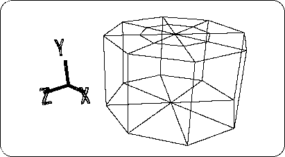
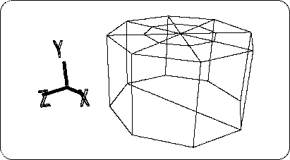
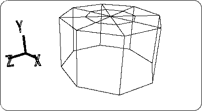
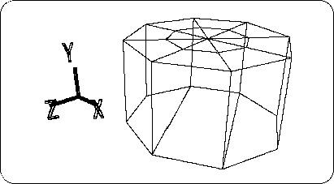

Return to previous page | Return to menu | Go to next page
After hiding the car object, make the tire. First,
[Mesh] → [Edge] → Right mouse button (Remove edge)
Use 8 to sharpen the 8 edges and replace the remaining points (8 points) with
[Mesh] → [Vertex] → Mouse right button (Remove vertex)
Please erase with. The result is shown below (Figure 3-32).

In addition, make a hand on the bottom.
First, cut the edge as shown (Figure 3-33).

The point remaining in the center is
[Mesh] → [Vertex] → Right mouse button (or [Effect] → [Cleanup])
Use to erase.
And the line left in the center is also
[Mesh] → [Edge] → Right mouse button (Remove edge)
To erase (Figure 3-34).

Currently, the bottom should be an octagonal polygon. This is
[Mesh] → [Edge] → Left mouse button (Add ONE edge)
To divide as shown (Figure 3-35).

Compare the number of polygons on the top and bottom. Reduced from 16 polygons to 3 polygons.
Caution
Keep in mind that this “decrease the number of polygons” is a task that will always be followed in 3D polygon game production.